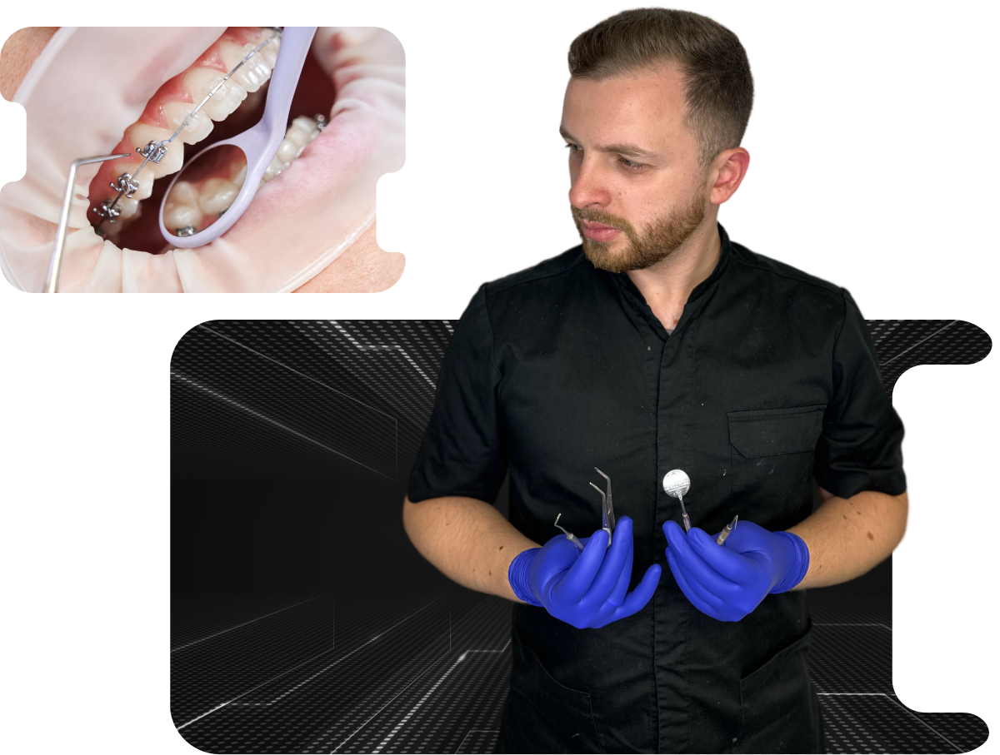
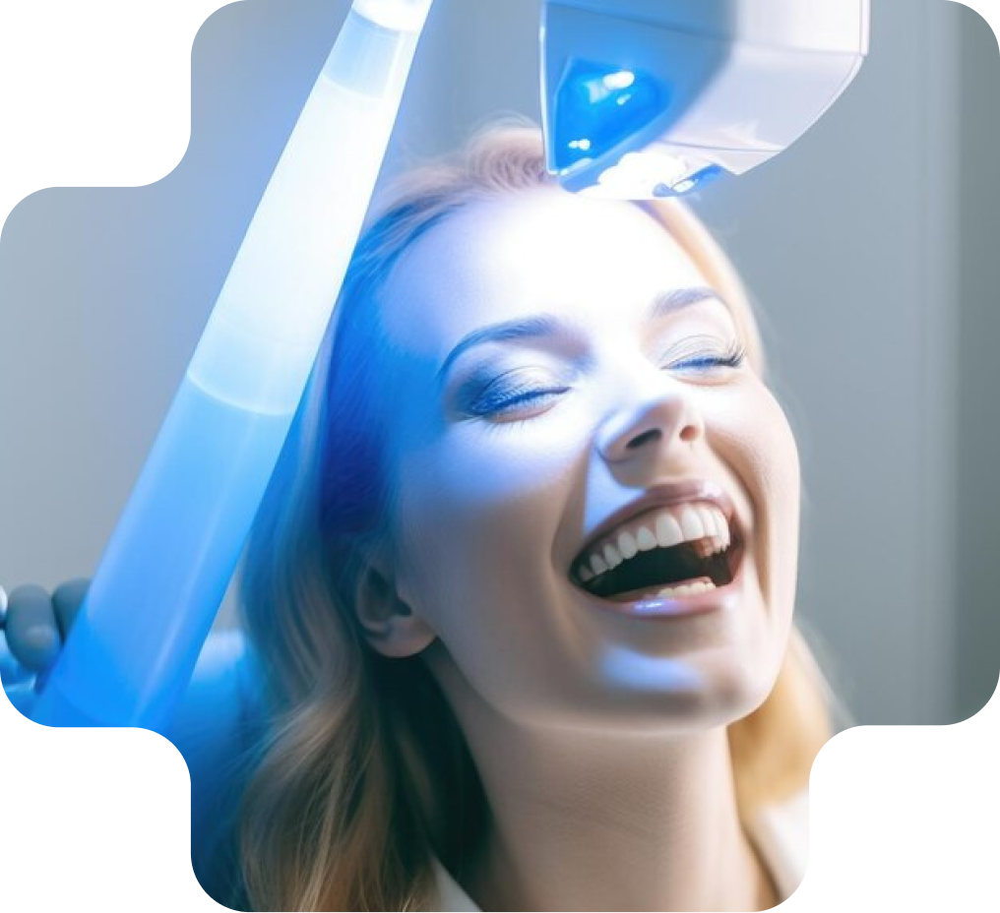
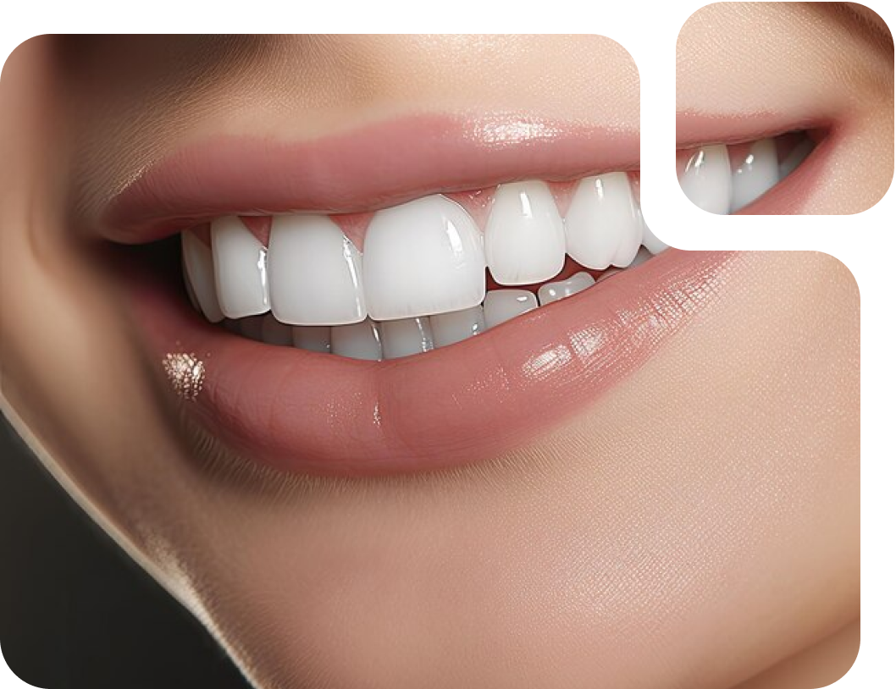
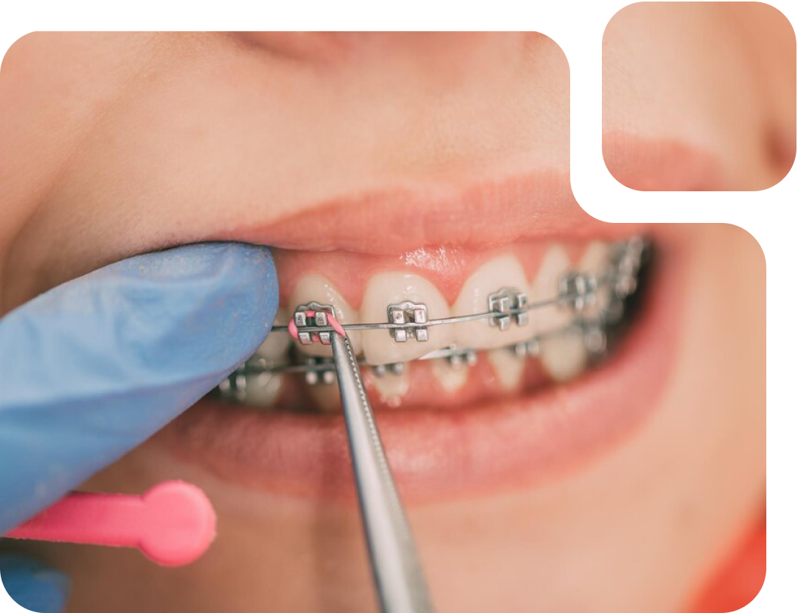
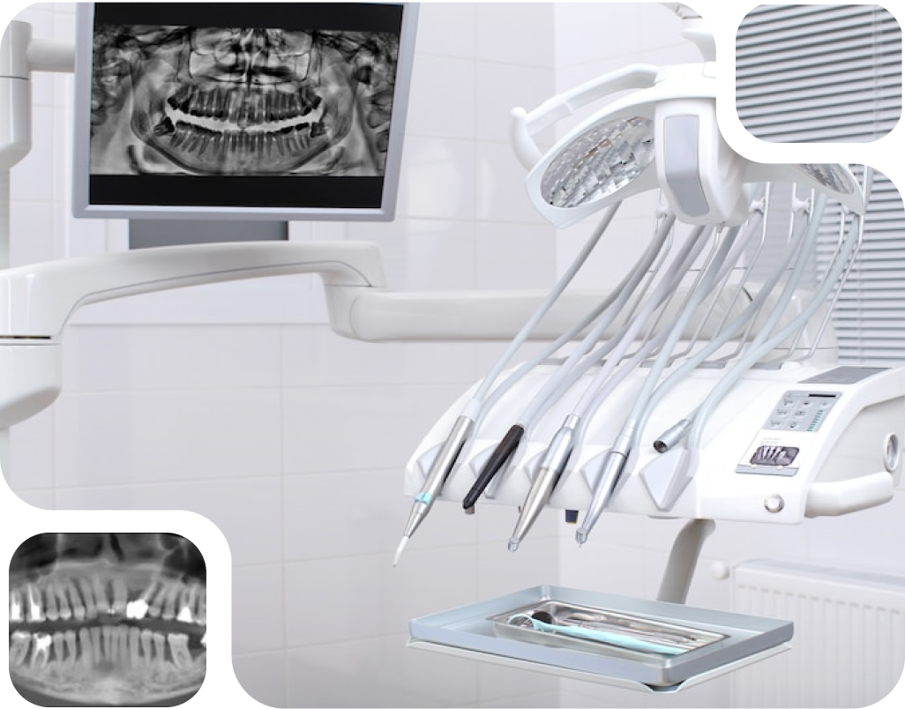
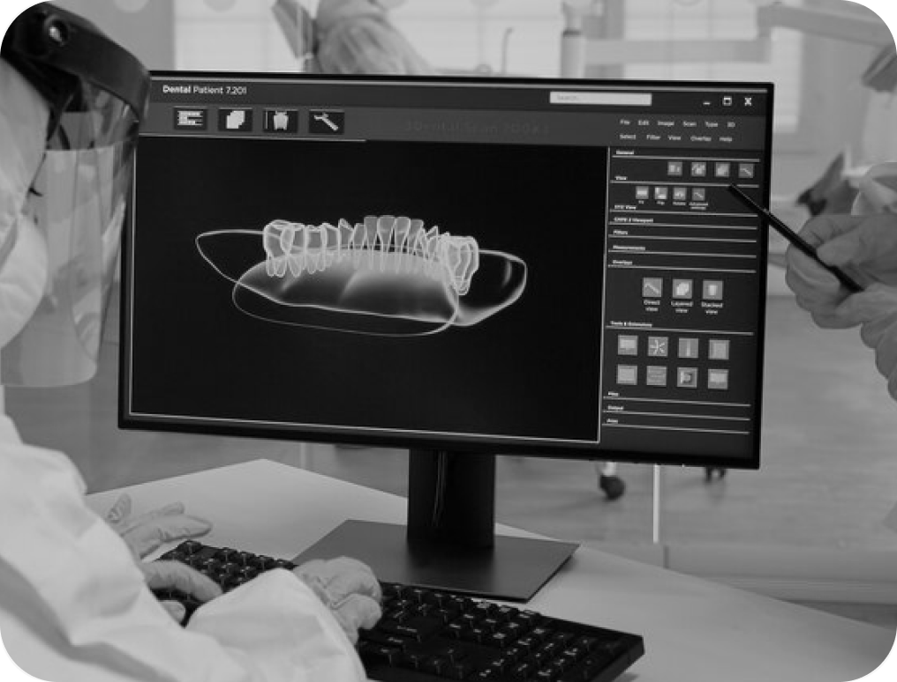
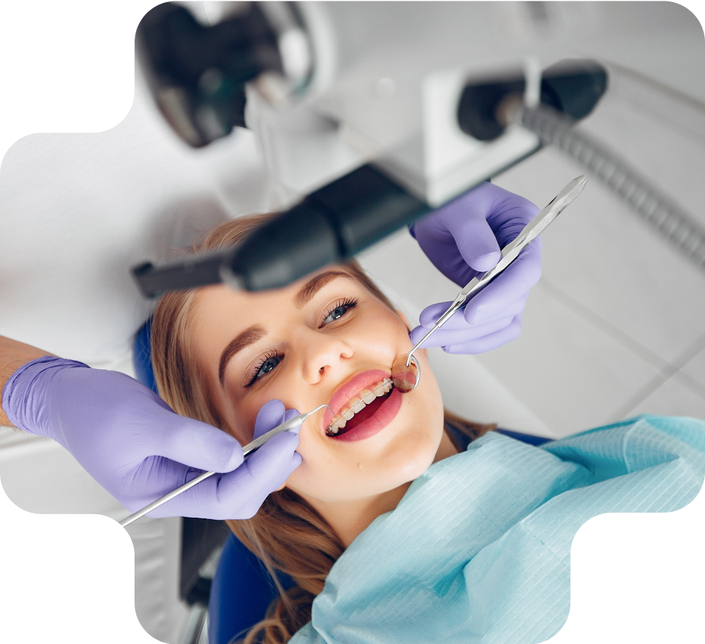

Вирівнювання зубів — доволі розповсюджена процедура в сучасному світі. У багатьох людей на різних
етапах розвитку зубо-щелепної системи виникають ситуації, через які зуби можуть прорізуватися в
неправильному положенні. Це можуть бути генетичні фактори, шкідливі звички, раніше або пізніше
видалення молочних зубів, відсутність носового дихання через аденоїдів або поліпів, неправильне
прорізування зубів мудрості.

Це далеко не весь перелік причин, які можуть викликати аномалії прикусу або неправильне
розташування окремих зубів, що в майбутньому позначиться на якості жування, викличе ускладнення
при гігієнічних процедурах або відіб’ється на естетиці при посмішці та розмові.
Багато людей думають про вирівнювання зубів як про косметичну потребу, але насправді є важливі
причини для здоров’я
Рівні зуби не тільки забезпечують вам чудову посмішку, але й зменшують ризик розвитку карієсу.
Неправильне розташування зубів або неправильний прикус значно важче очистити за допомогою чищення
щіткою і використання зубної нитки. Там часто затримується їжа, сміття та бактерії, які з часом
можуть накопичуватися і викликати захворювання ротової порожнини.

Найчастіше для вирівнювання зубів використовуються брекет системи. Це системи замків, які
кріпляться до кожного зуба і зв’язуються разом спеціальною дугою, яка вирівнює зуби, виставляючи
їх на правильне місце.
Брекети — це прилади, які використовуються для вирівнювання або випрямлення зубів, допомагають
виправити щелепу, покращити жування та естетику посмішки. Ваш стоматолог — це найкраща людина, яка
може порадити варіанти та методи лікування залежно від конкретно вашого зубного ряду.
Брекети мають кілька різновидів, і підбираються індивідуально кожному пацієнту за допомогою
додаткових досліджень і вивчення ситуації, яка склалася у нього. Крім брекет систем ще
використовуються прозорі капи-елайнери або ортодонтичні пластини. Однак є випадки, коли той чи
інший метод не ефективний.

Вирівнювання зубів — показання лікування:
Порушення прикусу (тобто неправильне співвідношення між нижньою і верхньою щелепою).
Наявність проміжків між зубами.
Зуб або група зубів виступають із зубної дуги.
Зуби повернені навколо своєї осі або накладаються один на одного.
Після видалення зуба, сусідні зуби змістилися в його бік (феномен Попова-Годона).

Основною причиною встановлення брекетів зазвичай є покращення зовнішнього вигляду обличчя. Проте
більшість з нас не знає, що існують інші причини, які потребують ортодонтичного лікування, такі як
відкритий прикус, структура щелепи, перехресний прикус тощо.
Що таке змішаний зубний пробор?
Це етап, коли дорослі або постійні зуби замінюють молочні зуби, які допомагають у зовнішньому вигляді,
мовленні та травленні. На цьому етапі люди можуть зіткнутися з багатьма проблемами, які можна
виправити лише за допомогою брекетів. Цей перелік проблем включає:
Скученість / випадкове розташування зубів (може призвести до поганої гігієни порожнини рота, а
також може бути причиною карієсу).
Неправильний прикус, що впливає на ефективність жування.
Криві зуби, які можуть бути основною причиною проблем пародонту, таких як кровоточивість ясен,
галітоз (неприємний запах з рота) і рухливість зубів (передчасна втрата зубів).
Розташовані вперед/нахилені зуби, що призводить до більш опуклого профілю та зміщеного назад
підборіддя.

Що таке змішаний зубний пробор?
Етап, коли в роті є комбінація як молочних, так і постійних зубів, називається змішаними
зубами. Носіння брекетів на цьому етапі вирішує такі проблеми:
Порушення росту щелеп на цьому етапі можна виправити неінвазивним способом, який пізніше може
вимагати хірургічної корекції.
Лікування кривих зубів. Це потрібно лікувати на ранній стадії, інакше така процедура може
вплинути на психологію дитини.
У якому віці краще починати вирівнювання зубів?
Для кожного цей вік індивідуальний. Ортодонтичне лікування можна починати з 7 років, верхньої
межі віку не існує. Якщо у вас гарний стан ротової порожнини і тверді зуби, ви можете встановити
брекети в будь-якому віці.
Сьогодні крихітні брекети встановлюються на передню поверхню зуба і виготовляються з металу або
кераміки. Вони кріпляться до передньої поверхні зуба за допомогою клейоподібного матеріалу, а на
задніх зубах можна використовувати металеві стрічки. Дроти дуги розміщені всередині брекетів і
виготовлені з нікель-титанового матеріалу, що активується при нагріванні, може нагріватися через
температуру в роті, що дозволить чинити постійний тиск на зуби, а також дроти дуги піддаються
коригується в кабінеті ортодонта.
Догляд за ротовою порожниною
Чистіть зуби щіткою і ниткою двічі на день, щоб зберегти ваші зуби здоровими. Здорові зуби
краще реагують на лікування.
Вчасно відвідуйте свого стоматолога для подальших перевірок.
Будьте терплячі. Тривалість лікування може змінюватися в залежності від піддатливості ваших
зубів лікуванню.

Намагайтеся уникати липкої їжі, наприклад жувальні гумки або карамельні цукерки.
При заняттях спортом та професійних тренуваннях варто надягати капу.
Вживайте напої з низьким вмістом цукру, обмежте вживання газованих напоїв (не більше однієї
бутики на тиждень)
Чистіть зуби щіткою після кожного прийому їжі і ніколи не допускайте, щоб їжа застрягла на
брекетах.
Не жуйте тверду їжу та лід.
Не гризти нігті.
Не забувайте використовувати зубну нитку.
Регулярно відвідуйте свого стоматолога для огляду та корекції.

Як зберегти посмішку після зняття брекетів?
Після того, як ваш ортодонт визначить, що брекети можна зняти, дуже важливо, носити фіксатор
(пластмасовий пристрій) вдень або вночі, в залежності від рекомендації лікаря.
Фіксатор можна очистити теплою водою або зубною пастою за допомогою щіткою після того, як ви його
одягнете, а також перед тим, як помістити його до пластмасового контейнеру для зберігання.
Витратьте час на ортодонтичне лікування та пишайтеся своєю посмішкою!
Вартість лікування і детальний план можна обговорити на консультації у ортодонта. Вартість
консультації 300 грн. Для запису телефонуйте + 380500230145